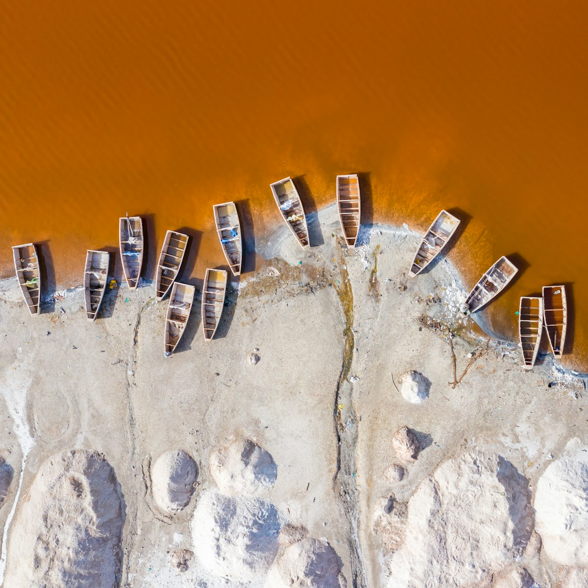
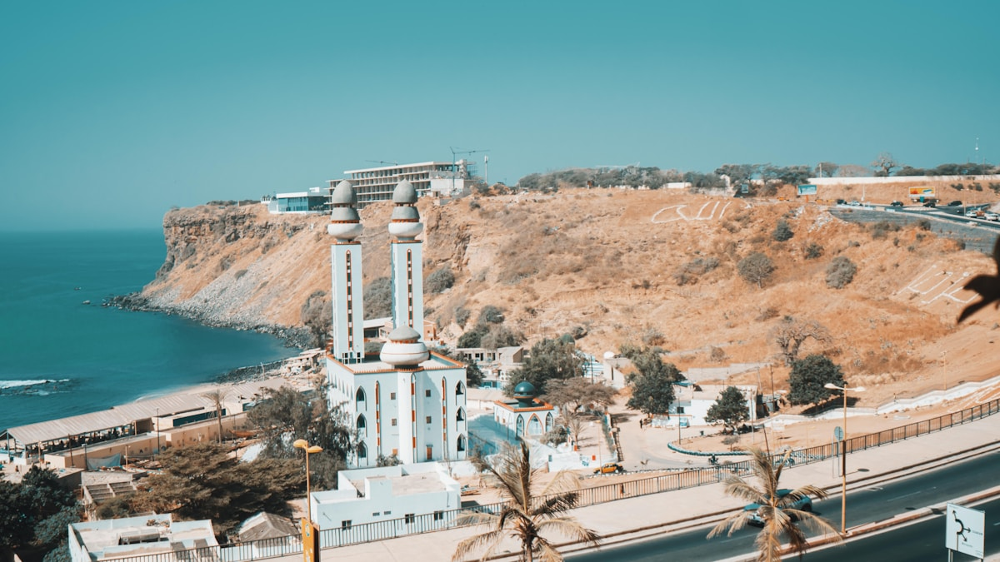
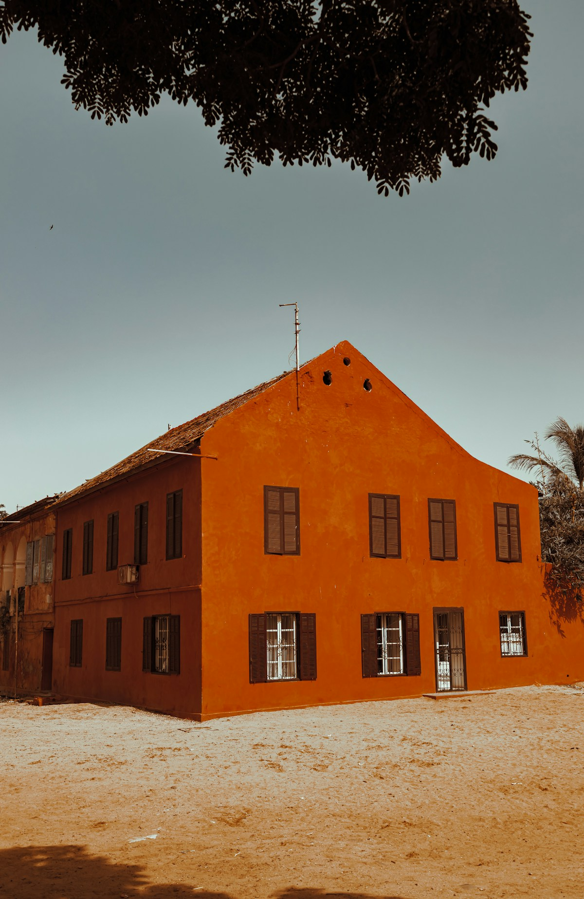
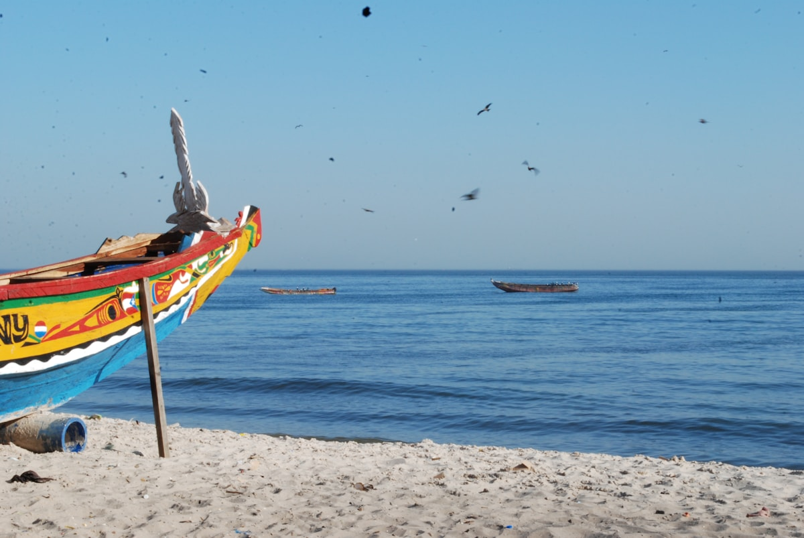
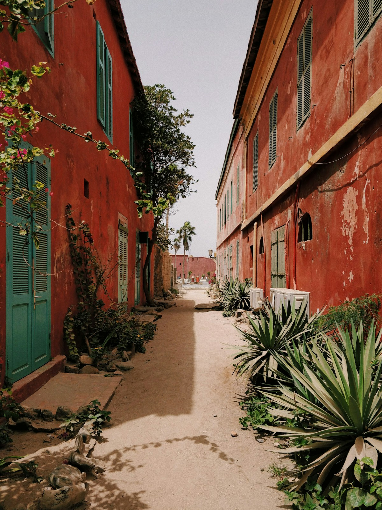
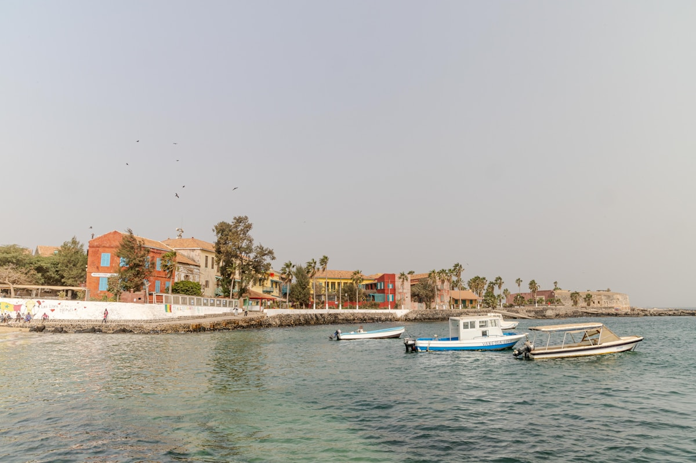
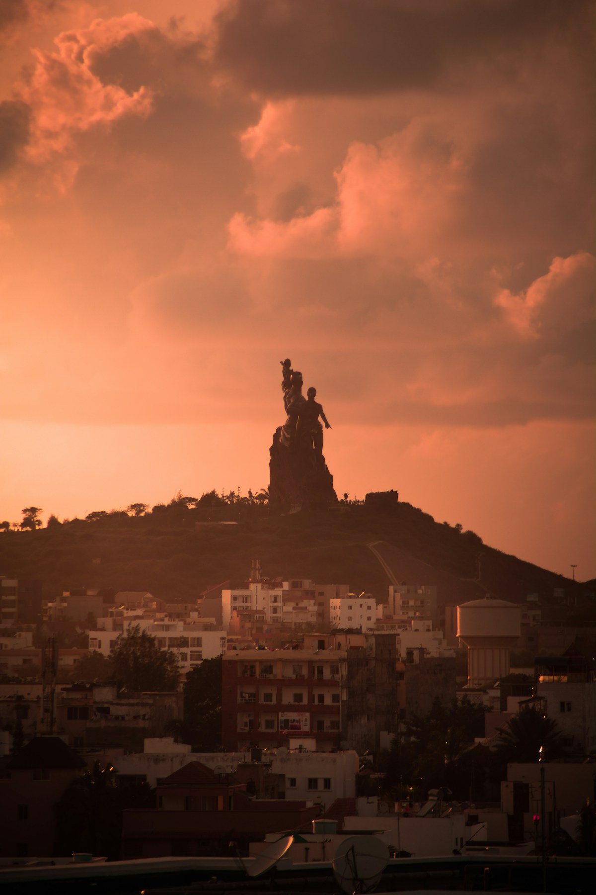
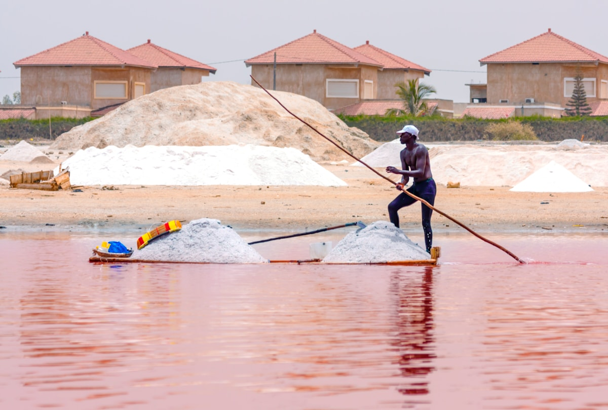

| 事项 | 结论 |
|---|---|
| 事项 | 结论 |
| 签证（最关键） | 中国内地护照需提前办塞内加尔签证：官方 evisa.senegal.gouv.sn 电子签（旅游单次约 50 美元起，3–10 个工作日出签）；达喀尔机场有落地签通道但政策不稳，建议电子签到手再飞 |
| 推荐方案 | 7 天：达喀尔 2 天 → 玫瑰湖&雷特巴岛 1 天 → 圣路易斯 2 天 → 萨卢姆三角洲 1 天 → 返程 1 天 |
| 行程链 | 达喀尔 → 玫瑰湖/雷特巴岛 → 圣路易斯 → 萨卢姆三角洲 → 达喀尔返程 |
| 预算（人均） | 经济 12000–18000 ／ 标准 22000–35000 ／ 舒适 45000–65000（人民币） |
| 三件提前事 | ① 办电子签 ② 打黄热病疫苗（入境必查小黄本）③ 包车+船游提前订（戈雷岛渡轮、萨卢姆独木舟） |
| 季节提醒 | 11 月–次年 5 月旱季干燥凉爽最佳；玫瑰湖旱季（1–3 月）盐度最高、粉色最浓；6–10 月雨季湿热 |
| 支付 | 西非法郎（XOF）现金为主，大城市酒店可刷卡；1 元 ≈ 80 西非法郎 |
以下为 7 天 6 晚的推荐节奏：以达喀尔为轴心，包车沿大西洋北上圣路易斯再南下萨卢姆，全程约 1200km。每日移动 ≤4h，景点集中在上午凉爽时段，午后海边发呆。
| 日期 | 行程 | 过夜地 | 主题 |
|---|---|---|---|
| D1 抵达达喀尔 | 转机约 20h 抵达，入住市中心，科尔尼什海滨日落 | 达喀尔 | 抵达日 |
| D2 | 戈雷岛渡轮半日 → 非洲复兴纪念碑 → 达喀尔市区 | 达喀尔 | 历史与都市 |
| D3 | 玫瑰湖&雷特巴岛一日：粉湖盐田 + 盐工村落 | 达喀尔 | 粉湖一日 |
| D4 | 达喀尔→圣路易斯（约 4h），午后老城殖民建筑漫步 | 圣路易斯 | 驶向老城 |
| D5 | 圣路易斯：费伊德桥+渔港 → 巴巴里沙嘴灯塔 | 圣路易斯 | 法式老城日 |
| D6 | 圣路易斯→萨卢姆三角洲（约 5h），独木舟红树林巡游 | 萨卢姆 | 三角洲日 |
| D7 返程 | 萨卢姆→达喀尔机场（约 3h），达喀尔✈北京 | — | 收尾 |
以下为 7 天全程的逐小时执行时间线，可当作「当天打开照着走」的清单。标注 ※ 的可选项视体力与天气取舍。
| 时间 | 事项 |
|---|---|
| 全天 | 北京✈（经巴黎/迪拜/布鲁塞尔转机约 20h）✈达喀尔布莱兹·迪亚涅国际机场 |
| 13:00–15:00 | 入境：出示电子签+黄热病小黄本+返程机票，换汇点换西非法郎 |
| 16:00–18:30 | 入住市中心，科尔尼什海滨大道 Corniche散步：大西洋日落+灯塔 |
| 19:00 | 晚餐：达喀尔海鲜餐厅（塞内加尔海鲜在西非数一数二） |
| 时间 | 事项 |
|---|---|
| 08:00 | 前往达喀尔港乘戈雷岛渡轮（往返约 5500 西非法郎，20 分钟） |
| 09:00–12:00 | 戈雷岛 Île de Gorée（世界遗产）：奴隶屋博物馆、彩色殖民小楼、艺术家街区 |
| 12:30–14:00 | 岛上餐厅午餐（法式+塞内加尔菜） |
| 15:00–17:00 | 非洲复兴纪念碑（门票约 5000 西非法郎）：49m 铜像，可登顶看达喀尔全景 |
| 18:00–19:30 | 达喀尔市中心：总统府外街、马德莱纳市场 |
| 时间 | 事项 |
|---|---|
| 08:30 | 达喀尔出发（约 1h 车程）前往玫瑰湖 Lac Rose / 雷特巴岛 |
| 09:30–12:00 | 玫瑰湖（免费）：粉红色湖水+盐田，看盐工划桨收盐、白盐堆成山；正午光线粉最浓 |
| 12:30–14:00 | 湖边餐厅午餐（Chez Salim 等，尝塞内加尔烤鱼） |
| 14:30–16:30 | 雷特巴岛村落漫步：盐业小村、可试「死海式」漂浮（湖水含盐量高达 40%） |
| 17:00 | 返达喀尔 |
| 时间 | 事项 |
|---|---|
| 08:30 | 达喀尔出发北上（约 260km，4h，沿 N2 国道） |
| 12:30 | 途中午餐（小镇餐厅） |
| 14:00 | 抵达圣路易斯 Saint-Louis（世界遗产）：入住老城（Ndar 岛）酒店 |
| 15:30–18:30 | 老城漫步：殖民建筑、费伊德桥（铁桥）、河边街道画廊 |
| 19:00 | 晚餐：老城河边餐厅（尝 Yassa 柠檬洋葱鸡肉饭） |
| 时间 | 事项 |
|---|---|
| 08:00–10:30 | 圣路易斯渔港晨景：彩色独木舟返航、晒鱼市场，摄影人天堂 |
| 11:00–12:30 | 费伊德桥 + 主教堂：1876 年建的铁桥横跨塞内加尔河 |
| 13:00–14:00 | 午餐：老城海鲜 |
| 15:00–18:00 | 租车/打车到巴巴里沙嘴 Langue de Barbarie：灯塔+沙丘+大西洋交汇，日落绝美 |
| 19:00 | 晚餐：河边爵士酒吧（圣路易斯是西非爵士之乡） |
| 时间 | 事项 |
|---|---|
| 08:00 | 圣路易斯出发南下（约 300km，5h，经达喀尔绕行） |
| 13:00 | 抵达萨卢姆三角洲 Sine-Saloum（世界遗产）：入住生态旅馆 |
| 14:30–17:30 | 独木舟/皮划艇红树林巡游（约 1.5–2h）：红树林水道、白鹭与苍鹭、贝壳岛 |
| 18:00 | 晚餐：河边烤鱼+日落 |
| 时间 | 事项 |
|---|---|
| 08:00–09:30 | 萨卢姆早餐+退房，出发回达喀尔（约 180km，3h） |
| 11:00–12:30 | 抵达机场，办理值机 |
| 13:30–15:30 | 机场免税店补货（西非腰果、塞内加尔咖啡） |
| 16:00–次日 | 达喀尔✈（转机）✈北京，入境到家 |
必去（必去）/ 顺路（顺路）/ 可跳过（可跳过）。

顺路
必去
顺路
顺路
必去
必去
顺路图片为 Unsplash 主题图（玫瑰湖、达喀尔清真寺、戈雷岛、塞内加尔海岸与红树林等均为塞内加尔实景或同主题），用于页面配图。更多免费看点：达喀尔科尔尼什海滨、圣路易斯渔港、朱贾鸟保护区（观鸟收费）。
点击左侧节点可在地图上定位；点击地图 marker 会高亮对应节点。坐标为 WGS-84 转 GCJ-02 纠偏后标注。
以下为单人、不含购物的估算，人民币计价；出发地基准北京。汇率按 1 元 ≈ 80 西非法郎、1 欧元 ≈ 655.9 西非法郎（固定汇率）估算。往返机票按淡季转机 8000–11000 元计，境内包车按 2 人分摊估算。
| 项目 | 经济（12000–18000） | 标准（22000–35000） | 舒适（45000–65000） |
|---|---|---|---|
| 往返机票 | 转机往返 8000–11000 | 直挂转机 12000–16000 | 灵活票/商务 20000–28000 |
| 境内交通（包车+船游） | 拼车+渡轮 1500–2500 | 包车+船游 3500–5500 | 专车+私人船 8000–12000 |
| 住宿（6 晚） | 旅馆/民宿 300–500/晚 | 中档酒店 800–1300/晚 | 生态旅馆/海边度假 2000–3200/晚 |
| 门票+活动 | 基础门票约 800–1200 | 含戈雷岛/纪念碑/船游 2000–3200 | 含私人向导+全程船游 5000–7500 |
| 餐饮（7 天） | 街摊+快餐 1200–2000 | 餐厅+街摊结合 3000–4500 | 全餐厅+酒水 7000–10000 |
对鸟类感兴趣，把圣路易斯延长为 2.5 天，去朱贾国家鸟类保护区 Djoudj（11–3 月候鸟季）：火烈鸟、鹈鹕、白鹭成群，船游约 1.5–2 万西非法郎。萨卢姆三角洲可顺延或砍掉。
带娃推荐砍掉长途段：达喀尔 3 天（戈雷岛+海滩）+玫瑰湖 1 天+圣路易斯 2 天纯休闲；萨卢姆车程太长儿童易累。圣路易斯海滨酒店有泳池的优先，达喀尔选市中心步行可达的酒店减少打车。西非法语区，会点简单法语沟通更顺。
| 方式 | 时长 | 参考价 | 备注 |
|---|---|---|---|
| 转机（唯一） | 北京→达喀尔约 20h | 往返 8000–16000 元 | 经巴黎/迪拜/布鲁塞尔，塞内加尔航空经巴黎的班次多 |
| 直飞 | — | — | 中塞暂无直航 |
| 国际铁路 | — | — | 无陆路铁路连接中国，只能飞机 |
| 区域 | 价格/晚 | 优点 | 短板 |
|---|---|---|---|
| 达喀尔·市中心/科尔尼什 | 经济 300–550 / 标准 700–1300 | 海滨日落、餐厅密集 | 堵车、旺季贵 |
| 达喀尔·机场区 | 标准 600–1000 | 转机过夜方便 | 距市区 40km |
| 圣路易斯·老城 Ndar 岛 | 经济 350–600 / 标准 800–1500 | 殖民老城氛围 | 设施偏老 |
| 圣路易斯·海边 | 标准 800–1500 | 泳池度假，法式风情 | 离老城需打车 |
| 萨卢姆·生态旅馆 | 标准 800–2000 | 红树林环绕、观鸟 | 位置偏，全包餐为主 |